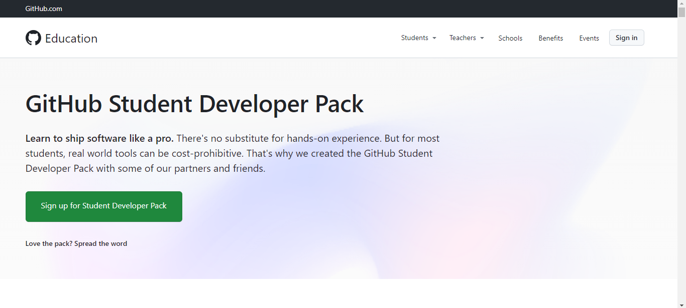
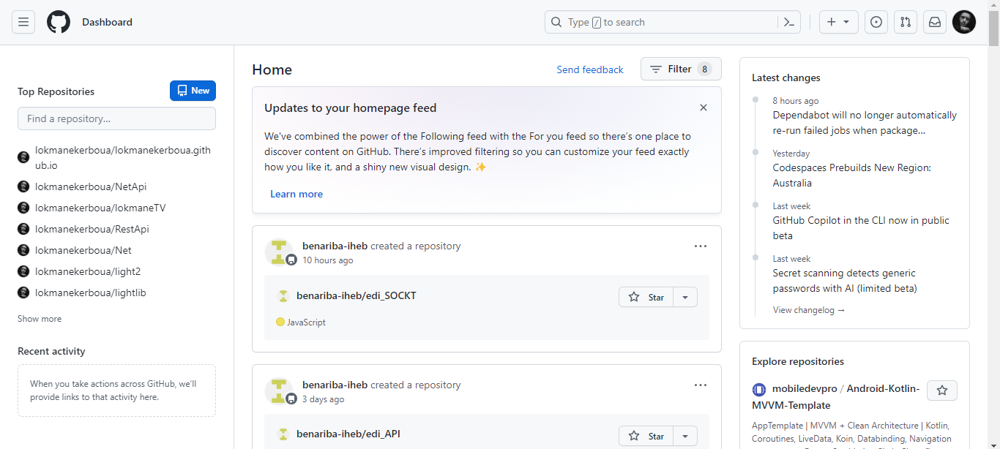
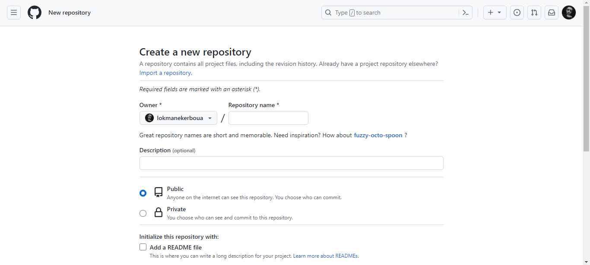

What is GitHub?
GitHub is an immense platform for code hosting. It supports version controlling and collaboration and
allows developers to work together on projects. It offers both distributed version control and source
code management (SCM) functionality of Git. It also facilitates collaboration features such as bug
tracking, feature requests, task management for every project.

Advantages of GitHub
GitHub can be separated as the Git and the Hub. GitHub service includes access controls as well as
collaboration features like task management, repository hosting, and team management.
** The key benefits of GitHub are as follows.
** It is easy to contribute to open source projects via GitHub.
** It helps to create an excellent document.
** You can attract the recruiter by showing off your work. If you have a profile on GitHub, you will
have a higher chance of being recruited.
** It allows your work to get out there in front of the public.
** You can track changes in your code across versions.
Features of GitHub
GitHub is a place where programmers and designers work together. They collaborate, contribute, and fix
bugs together. It hosts plenty of open source projects and codes of various programming languages.
Some of its significant features are as follows:
** Collaboration
** Integrated issue and bug tracking
** Graphical representation of branches
** Git repositories hosting
** Project management
** Team management
** Code hosting
** Track and assign tasks
** Conversations
GitHub Education
GitHub education offers free access to various developer tools with GitHub partners. It provides
real-world experience.
We can create a project in our college days on GitHub and show creativity to the world. We can
collaborate with public repositories of other companies and impress them.
There are many communities that are already partners with the GitHub. GitHub organizes campus programs
for the school. See the eligibility and how to apply for the campus program, visit GitHub Schools.
A student can apply for the GitHub Student Developer Pack. GitHub student developer pack offers free
access to tools and services used by professional developers. Let's understand the student developer
pack.

How to Use GitHub?
This question is prevalent for the developers who have never used GitHub. This tutorial will assist you
in overcoming this question. There is nothing to worry about, the necessary steps for the using GitHub
are as follows:
Create a GitHub Account
The first step to explore the benefits of GitHub is to create a GitHub account. GitHub provides both the
free and pro membership to its user. We can explore many exciting and useful things in its pro account.
We can explore unlimited private repository and can control the user access.
To create a GitHub account, visit GITHUB.
GitHub Login
Log in to your GitHub account to use the GitHub service. To login to your account, click on the Sign-in option on the upper right corner. It will ask you for your email id and password. You can log in by entering your credentials. At your first login, the homepage will ask you to create your first repository and some other options like exploring the repository.
GitHub Repository
The repositories are the data structures used by GitHub to store metadata for files and directories. It encloses the collection of the files as well as the history of changes made to those files. Generally, the repository is considered a project folder. A single project can have more than one repository.
Create a repository
We can create an unlimited public repository and unlimited private repository (For the pro user) on GitHub. To create a repository on GitHub, click on the '+' symbol on the upper right corner on the login screen.

Click on the new repository option and then fill the required details like repository name, description, and select the access of this repository. You can also initialize the repository with a README file. After filling all the details, click on the Create Repository option. It will create a repository for you. Consider the below image:
